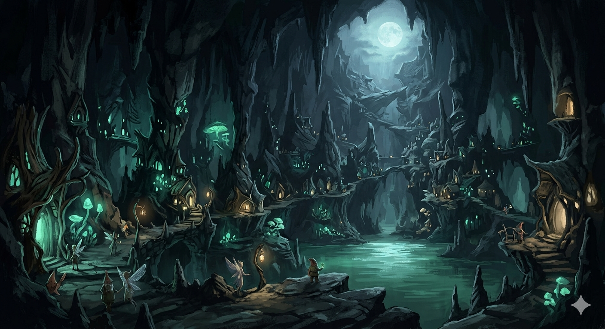
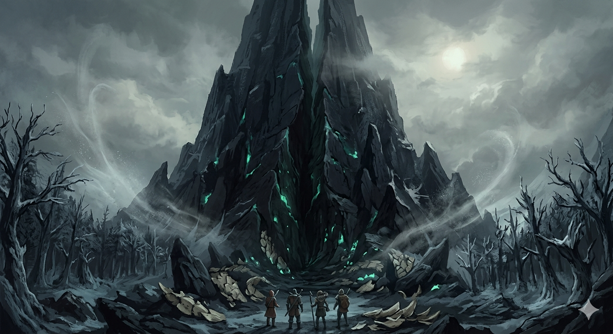
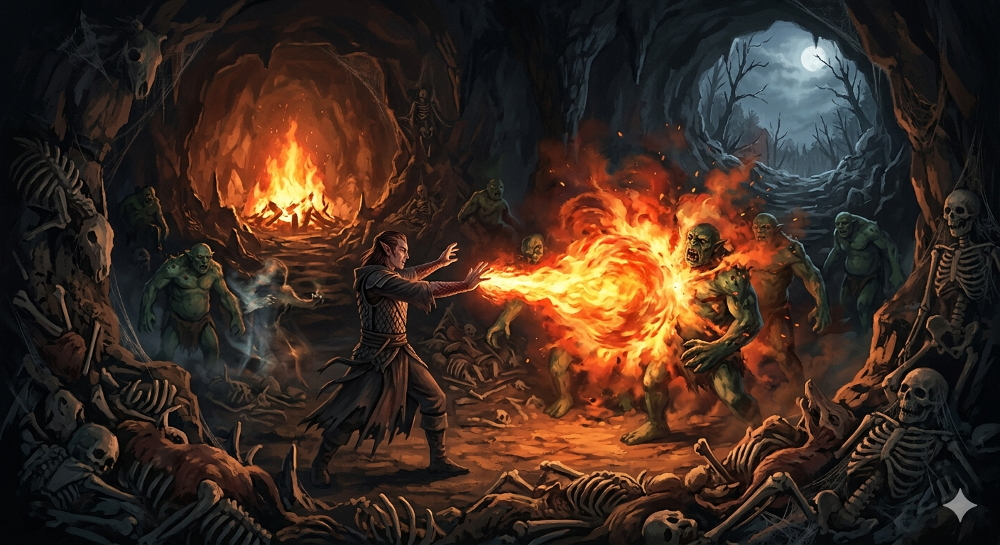
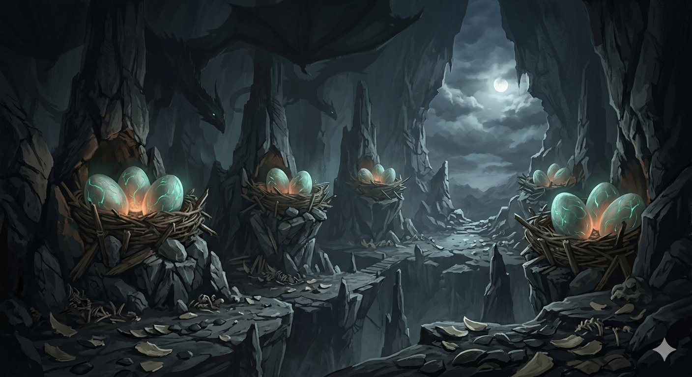
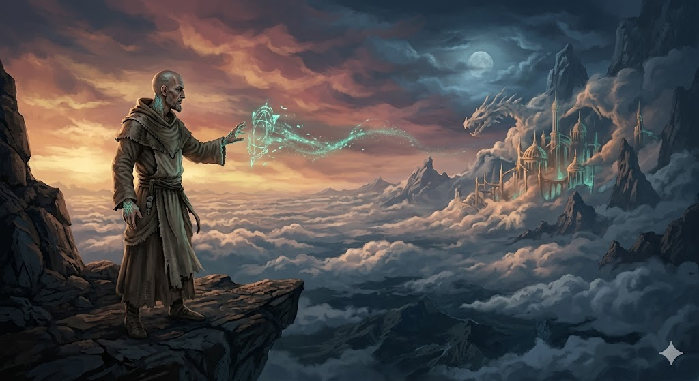

Há quem viaje para conquistar. Eu viajo para anotar. Nos últimos dias enchi mais páginas do que em todo o ano que passou, e que sirvam de algo, caso eu não volte para relê-las.
Descemos ao subsolo guiados pela pixie Nim, e o que encontramos não foi uma toca, e sim uma cidade. Cavernas que respiram luz, plantas que brilham como brasas mansas, casinhas encaixadas na pedra. Um povo inteiro de fadas e gnomos, vivo apesar de tudo o que se apagou lá em cima. (E parte daquela destruição foi nossa. Hendrick varreu a vida da superfície com uma magia, sem saber ao certo o que matava, e o que matava eram pixies, criaturas como estas que agora nos recebem. Eu ainda processo a facilidade com que ele faz essas coisas.)

Fomos recebidos por Vaileaf, a pixie que governa o refúgio. Onde os outros viram uma anfitriã nervosa, eu vi uma biblioteca viva, e a interroguei como tal. Foi dela que tirei o nome que vale guardar: Vorax, o devorador. Um dragão negro ancião, de olhos vermelhos, que dorme nas profundezas e voltou a rugir desde que o gnomo que o alimentava morreu na catástrofe. Não me engano sobre o perigo de uma criatura dessas. Também não me iludo achando que estamos despreparados: somos quatro, e já encaramos coisas piores. Anotei o nome, e anotei o vínculo curioso entre a fome de um monstro e o silêncio de um único morto.
Da boca de Vaileaf veio também a história antiga: a Tormenta, a guerra que esfacelou o mundo e levou os líderes de tantas raças, e a Corte da Aurora de Titânia, um tempo melhor que hoje soa a lenda. Dariel ouviu tudo de olhos arregalados, porque é o mundo da mãe dele, Kiara, dos elfos do sul, do pai dragão que partiu para a guerra e nunca voltou. Para mim era história. Para ele, herança.
Conhecemos ainda Silay, uma criatura que coleciona sons em frascos, como quem prende insetos num vidro. Toquei a minha canção da lâmina, e ela tentou capturá-la. Falhou na primeira vez, disse que precisaria de mais tempo comigo. Insistiu, e na segunda tentativa conseguiu: vi a aura do som ser recolhida para dentro do vidro. Raro o feitiço que escapa de um colecionador, e mais raro ainda o que se deixa pegar logo depois de resistir. Fiquei secretamente satisfeito com as duas coisas.
Nem tudo eram lendas e prodígios. Rastreávamos, fazia tempo, um grupo de humanos, e depois de tantos anos a pergunta que restava era simples: ainda estarão vivos? A resposta veio fácil, das próprias fadas. Sim, seguiram para as ruínas a leste, vivos, uma semana à nossa frente. Bom saber. Largamos o rastro ali mesmo, porque vivos a uma semana de distância não eram a nossa missão.
A missão era o outro. Conjurei o transporte rumo ao homem que nos havia chamado, e aqui a primeira inquietação de verdade: a magia funcionou, mas não nos depositou onde a tracei. Algo desviou a canalização, como uma corrente que torce um rio. Saímos diante de uma montanha de rocha negra, gigantesca, rasgada por uma fenda que mais parecia uma ferida. Frio de morder os ossos, floresta densa e escura, o sol preso acima das nuvens, o vento saindo da pedra como um gemido. Na entrada, escamas espalhadas pelo chão. Não arrancadas, trocadas. Algo enorme havia mudado de pele ali.

Dentro, carcaças enfileiradas e uma fogueira ao fundo. E trolls. Aprendemos depressa que feri-los não bastava: a carne fechava sozinha, teimosa. A resposta, como quase sempre nesta companhia, foi fogo, e Dariel é uma resposta de fogo com pernas. Eu lutei como costumo lutar, com a canção da lâmina acesa, espada e cajado num só gesto, intercalando magia entre os golpes. Dessa vez arrisquei algo novo: somei a invisibilidade, para atacar de onde ninguém me esperava. Funcionou melhor do que eu temia. Greed segurou a linha sozinho, ainda sem o seu boneco de aço, que perdemos e ele não refez. Hendrick varreu o que sobrava com a luz da lua que ele invoca, fria e impiedosa, que não pede licença. Quando o último troll caiu e ficou caído, entendi a regra daquele lugar: ali, só o fogo é definitivo.

Atravessamos uma ponte estreita sobre um abismo, vento uivando, e foi no meio dela que veio o som: um bater de asas grande demais para o meu gosto, vindo de algum ponto da escuridão. Não precisei de muito para entender de quem era.
Do outro lado, a montanha guardava ninhos colossais, do tamanho de carroças, com doze ovos repartidos em quatro ninhadas, todos pulsando quentes demais para o frio lá fora. Wyverns. E os ninhos não estavam abandonados, o que dava nome às asas que ouvíramos atrás: os pais rondavam por perto. Devo registrar uma fraqueza profissional: quis um daqueles ovos. Não para chocá-lo, para estudá-lo. Resisti, e anotei a vontade no lugar do ato, que é o que um estudioso prudente faz.

E então o motivo de tudo, ainda que não soubéssemos: Mordenkainen. Um homem careca, de feições de monge, quase um mendigo, que desfez um feitiço no ar como quem espanta uma mosca. Veio de outro plano, e a ambição dele me deixou sem fôlego, o que não é fácil. Pretende levitar esta montanha inteira e fazer dela uma cidade no céu, um lugar que enfim se possa controlar, já que tudo o que se ergueu no chão deste mundo apodreceu por dentro. Para isso precisa abrir um portal até a trama do seu próprio mundo, e é desse rasgo entre planos que virão os indesejados, uma espécie de guardiões que tentam impedir a intromissão. São eles que teremos de afastar enquanto ele conjura. Os Illithids, devoradores de mentes que se multiplicam em dias a partir de uma única criatura pensante, são outra guerra, e essa Elendor trava aqui mesmo, no nosso plano. Do outro lado, num plano onde o tempo corre tão torto que dias aqui são décadas lá, o pupilo de Mordenkainen estuda de antemão o que virá nos atacar quando ele mexer com a energia entre os mundos.

E nós? Fomos convidados a guardá-lo por um ano inteiro enquanto ele conjura. Um ano. Em troca, um lugar na cidade que talvez exista. Olhei para os meus companheiros, e eles olharam para o chão, porque "gente capacitada", nas palavras dele, parecia faltar exatamente onde estávamos os quatro.
Ainda não decidimos. Mas já sei o que vou escrever na próxima página, e me incomoda a vontade de ficar: um ano ao lado de um homem que vai reescrever o céu é um ano de anotações que nenhum outro estudioso deste mundo terá. Que sejamos rápidos com os guardiões, e que Elendor segure os devoradores do lado de cá.
Celeborn